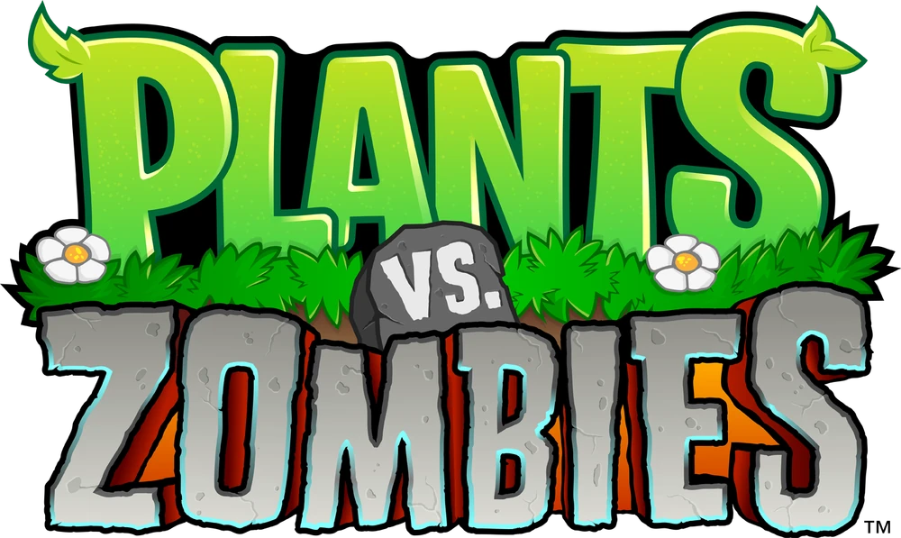

В игре 49 различных видов растений, они служат вам
линией обороны между вами и зомби, которых в игре всего
26 видов включая босса. Каждое растение имеет свои
особые свойства, силу и слабости, которые могут помочь
или помешать ему в борьбе с зомби. Изначально вы
начинаете игру в режиме "Приключение" только с одним
видом растений, но после победы на большинстве уровней в
режиме "Приключение" вы получите в награду новый вид
растения.
Кроме того, восемь из 49 растений
являются "улучшенными растениями", которые улучшают
возможности существующих растений, а одно растение
(Имитатор) не является ни обычным, ни улучшенным
растением.
